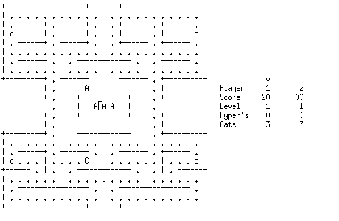
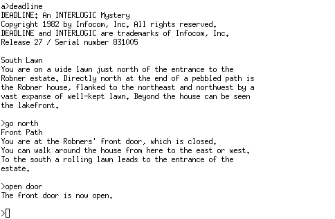
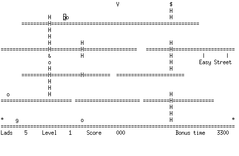

Z80 CP/M 2.2 Emulator
After finishing a prototype of a MOS 6502 emulator I almost immediately started working on another one. This time a Zilog Z80 based one that runs CP/M 2.2 with inspiration taken from the Kaypro II computer, so I named the emulator "Kaytil".
Despite taking inspiration from the Kaypro II, it does not actually emulate any of the Kaypro II specific hardware, with the exception of the Lear Siegler ADM-3A compatible terminal emulation. But I think most Kaypro II software should work as long as it is not hardware specific and only expects the CP/M OS functionality. ADM-3A escape codes are converted directly to ANSI counterparts without going through (n)curses, which should be good enough.
To be able to run CP/M I adapted the skeletal CBIOS from Digital Research's manual to the emulator code, which is using IN/OUT instructions to communicate with each other. This, together with the reverse engineered CP/M 2.2 source from Clark A. Calkins is assembled using Digital Research's MAC macro assembler. Since the assembler is itself a CP/M program, I have run this in YAZE, which is another popular Z80 CP/M emulator.
Note that the Z80 emulation is not complete, but simply good enough, so some functionality is missing. I have made sure that it passes all the ZEXDOC tests for documented instruction flags, but I have made no effort so support the undocumented flags required to pass the ZEXALL tests. I also think the emulator is quite slow compared to others, probably due to ineffective O(n) instruction lookup and passing of data through functions instead of using global variables. In order for some games to run correctly, the speed is also artificially slowed down by using an interval timer, so it kind of matches that of a real Kaypro II. Some of these things can be adjusted by compile time defines though.
For storage, the emulator operates around on IBM 3740 8-inch floppy disk images. These can easily be managed with the Cpmtools package, which can create new images (mkfs.cpm) or copy files to and from them (cpmcp) from the host system. A total of 4 floppy drives (A, B, C & D) are emulated and can each contain its own image. By default the images are "read only" so any changes are not written back to the disk image file, but this can be overridden with the command line arguments.
Here are some games I have been able to run:
* Ladder (Yahoo Software, Kaypro II Version)
* Aliens (Yahoo Software, Kaypro II Version)
* CatChum (Yahoo Software, Kaypro II Version)
* Colossal Cave Adventure (Michael Goetz, Kaypro II Version)
* Sargon Chess (Hayden Books, CP/M Version)
* Deadline (Infocom, CP/M Version)
* Zork I (Infocom, CP/M Version)
* Zork II (Infocom, CP/M Version)
* Zork III (Infocom, CP/M Version)
* Nemesis (SuperSoft, CP/M Version)
The initial version can be gotten here but I have also put the source code on here for possible further development.
Finally, some screenshots of different games:


